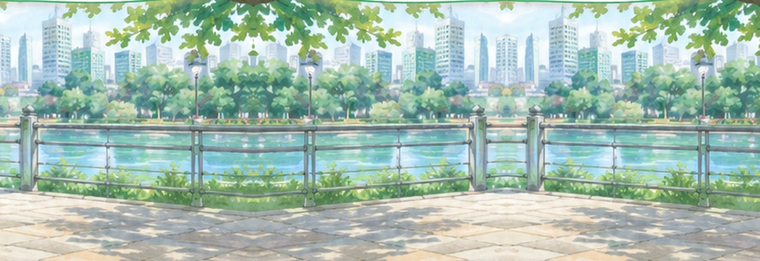
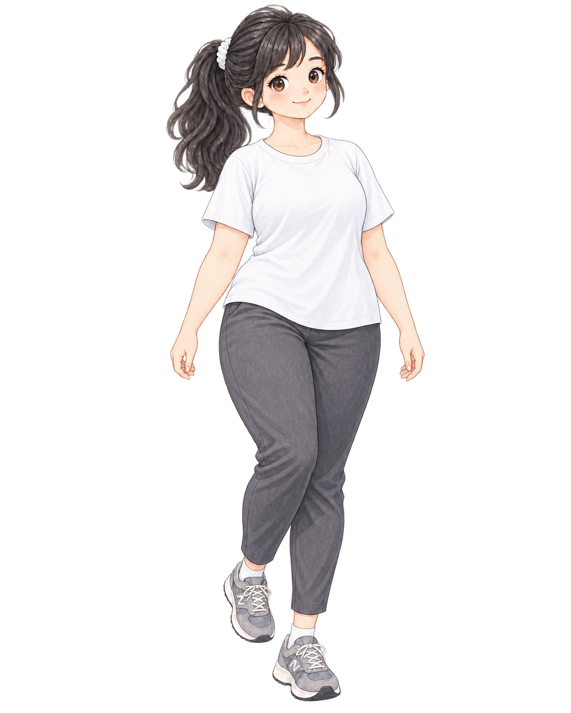
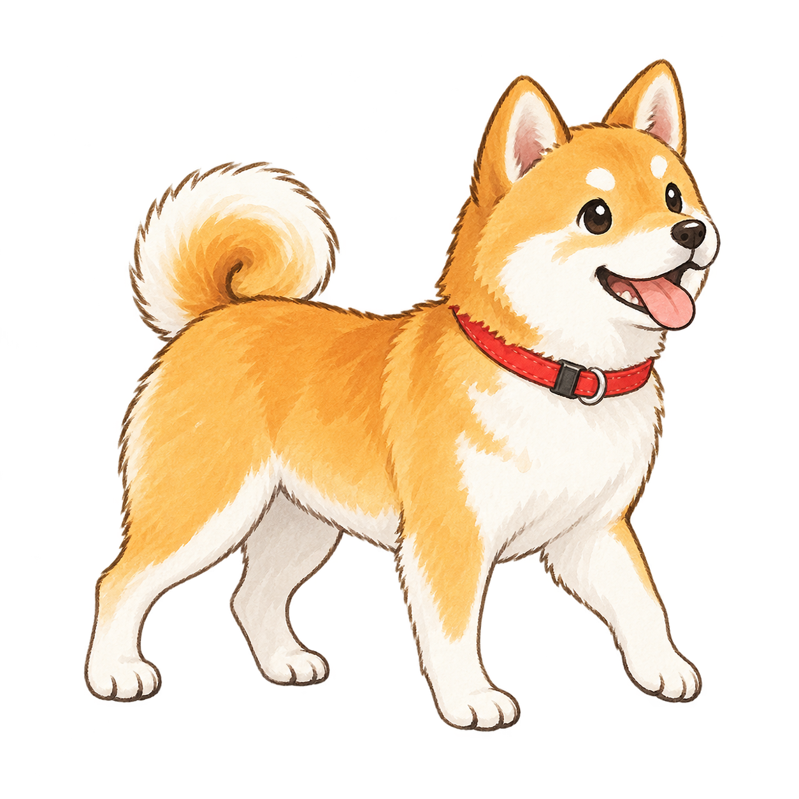
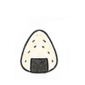
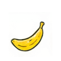
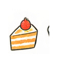
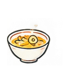

SANPO

今日も散歩日和自分のペースでいこう
今日もいい感じ！
ゆっくり続けよう。
ゆっくり続けよう。


0% / 今日の目標
今日の歩数
0 / 7,000 歩
距離目標 5.0 km
0%
消費カロリー
0kcal
歩行時間
0分
距離
0.0km
今日のがんばり
消費カロリーを身近な食べ物に置き換えると




歩きやすい周回コースを作ります。
地図をタップしてスタート地点を設定
距離-km
時間-分
歩数-
消費-kcal
コースを作成中…
00:00:00
歩数
0
距離
0.00 km
カロリー
0 kcal
いいペース！
その調子だよ。
その調子だよ。
総歩数0
総距離0.0 km
総カロリー0 kcal
歩行時間0 分
YOUR MOTIVATION
最近の散歩
プロフィール
km
キャラクター
体型変化プレビュー
今日の距離 ÷ 目標距離でキャラが変化します
0%
0%25%50%75%100%
アプリ
犬を表示する
歩行中のボイス
日次リセット毎日 0:00